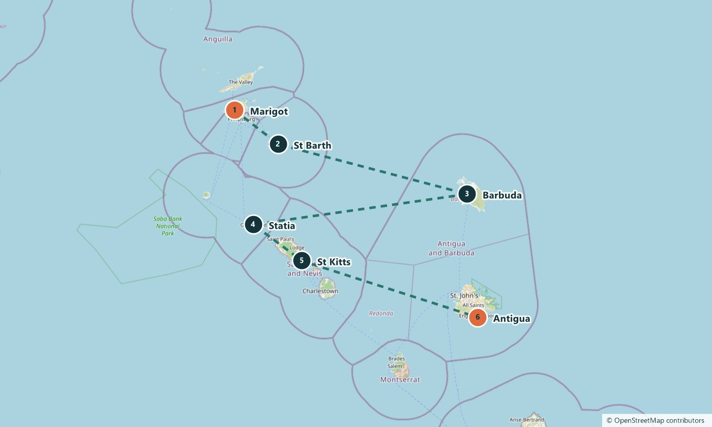

Leg 5 · St Martin → Antigua
Five islands, four flags, two World Heritage sites
Island hopping
20 Feb – 6 Mar 2027 · 2–14 days · 230 nautical miles on the full leg
2 of 5 berths booked
The route
Day sailing only, 230 nautical miles over two weeks. The language and the history change with every stop: French St Barth, Dutch Statia, and British forts and dockyards on St Kitts and Antigua. Plan on long lunches ashore.
The stops
Marigot
St Martin. Departure. See on Google Maps
St Barth
St Barth. A French island and the red-roofed harbour town of Gustavia. See on Google Maps
Barbuda
Antigua and Barbuda. A 27-kilometre pink-sand beach and one of the largest frigatebird colonies in the Caribbean. See on Google Maps
Statia
Sint Eustatius. In the 1700s one of the busiest ports in the Americas. Today about 3,000 people live here, beside a volcano called The Quill and dive sites with old wrecks. See on Google Maps
St Kitts
St Kitts and Nevis. Brimstone Hill Fortress, a UNESCO World Heritage site 240 metres above the sea. See on Google Maps
Antigua
Antigua and Barbuda. English Harbour and Nelson’s Dockyard, a Georgian naval base still in use and a UNESCO World Heritage site. See on Google Maps
The plan for each day, and exact harbours, are shared when you book and can change with the weather.
The route on a map
